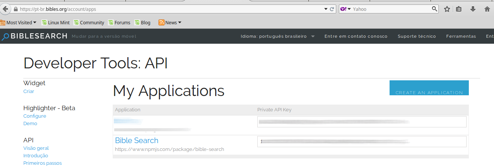
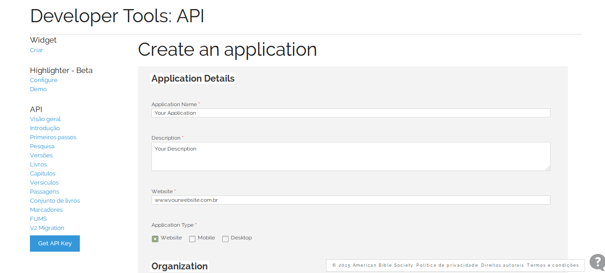
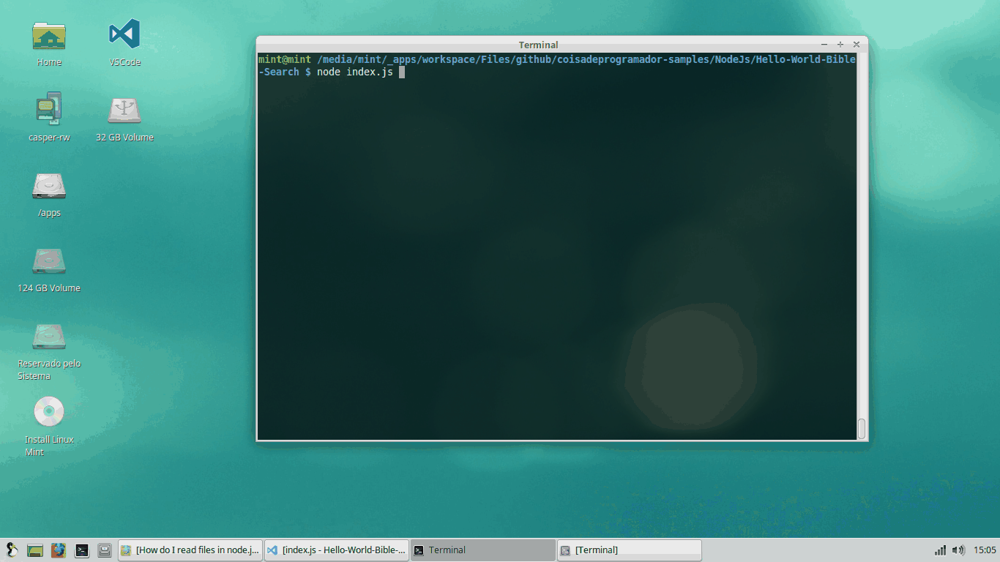

O que é ?
Um cliente NodeJS para conexão com a API https://pt-br.bibles.org/pages/api que contém diversas versões e traduções da bíblia.
O projeto está disponível no NPM e código fonte no GitHub.
Tecnologias envolvidas no desenvolvimento
- Babel Js - https://babeljs.io/
- Gulp Js - http://gulpjs.com/
- Mocha Js - https://mochajs.org/
A estrutura do projeto foi baseada no Scaffolding generator-node disponibilizado pelo Yeoman. Nice!
- Generator Node - https://github.com/yeoman/generator-node
Como instalar ?
Crie uma pasta para seu projeto, entre em sua linha de comando e digite:
npm install bible-search
Instale também o módulo colors que serve para facilitar a exibição de cores na linha de comando. ;)
npm install colors
Será necessário criar um cadastro no site Bibles.org para obter uma chave de acesso da API.
Crie uma aplicação clicando em CREATE AN APPLICATION.

Informe os dados de sua aplicação e obtenha uma chave de acesso, veja as restrições de utilização do serviço, clicando aqui.

Site para cadastro.
Vamos compartilhar!
Esta aplicação realiza um consulta de uma passagem da bíblia.
- index.js
var fs = require('fs');
var colors = require('colors');
var BibleSearch = require('bible-search');
fs.readFile('./ASCII.txt', 'utf8', function(err, template){
if(err)
throw err;
var bibleApi = new BibleSearch('<<SUA API KEY AQUI :)>>');
bibleApi.passage.getPassage({
book: 'rev',
chapter: 21,
start: 4
}).then(function (data) {
//JSON Structure see: https://pt-br.bibles.org/pages/api/documentation/passages
var noHTML = /(<([^>]+)>)/ig;
var word = data.response.search.result.passages[0].text.replace(noHTML, ' ').trim();
var text = template.replace('{{word}}', word);
console.log(colors.yellow(text));
}).catch(function (err) {
console.log(colors.red('Ops! Sorry :|'));
console.log(colors.red(err));
});
})
Digite node index.jspara executar a aplicação.

Código fonte
Veja no GitHub
Contribuições
O projeto é OpenSource, outros projetos serão desenvolvidos com base neste "client", se você deseja contribuir entre em contato.
Obrigado pela atenção!
Até a próxima!